Vuestic 2.0 Redesign Notes
Last update: October 23, 2018.
What Is This Page?
The purpose of this document is to pay attention to specific details to be sure they won't be lost when implementing. It's a complimentary guide for Zeplin source files.
Completed Changes
- Colors
- Typography
- Buttons
- Inputs
- Dropdown selects
- Checkboxes, radio buttons
- Tabs
- Forms
- [Upcoming] Tables
- [Upcoming] Cards & widgets
- [Upcoming] Modals
- [Upcoming] Icons
- [Upcoming] Notifications
Colors
Main colors are applied to texts, labels, secondary buttons, graphs, icons. The default 'black' text color is #34495E, but not #000.
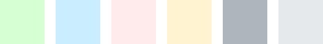
Light colors can't be calculated using lighten function, as they all have different shifts in hue and saturation. So it makes sense to set them apart from main 6 colors.
They are used as background colors for notifications, table
cells, text buttons. Dividers are light grey.
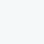 There is an extra Pale color that is a default color for even rows in tables.
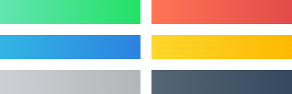 Buttons have 6 gradients based on main colors.
On hover we apply lighten 15%, on pressed — darken 15% for every element(solid color or gradient). The only differene is text buttons.
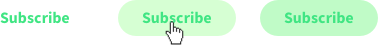 Text buttons have one of the light colors on hover, and 15% of the main color extra as an overlay for pressed state.
Typography
The amount of text font styles was drastically reduced, font weights were limited to 400 regular and 700 bold.
- Regular 16/24 and 14/20 are used for plain texts, inputs, dropdowns, links, etc.
- Buttons and tabs share bold text style.
- Labels, table headings, section titles, widget & card titles share the same text style.
- 'Source Code Pro' font family for code snippets.
- H1—H6 styles were updated as well. Please pay attention to margins.
Buttons
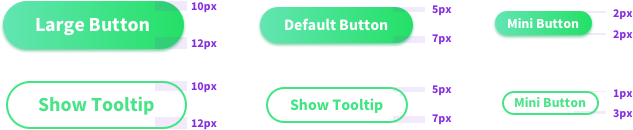 Labels in large and default buttons are shifted torwards top. Small button labels are vertically centered. The only difference — small secondary button.
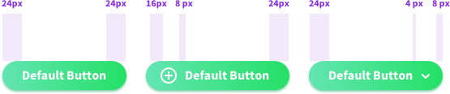 Right icon's (dropdown arrow) padding differs from the left side icon's one.
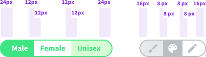 Far left and right paddings are larger than the others.
Text button hover style differs from links behavior. Pressed button background will add extra 15% of the original color to its current background color value (e.g. 15% opacity Green overlay to a Light Green background for a Green text button).
Inputs
Placeholder position is slightly shifted torwards top border and is not vertically centered.
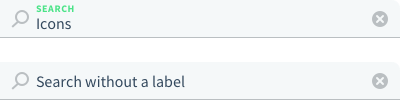 We should consider an alernative filled input layout — without a label and a value not changing its position (ex placeholder). It should be a default layout for Search.
Input labels share the same style as widget titles, table headings, sections titles and labels.
Dropdown Selects
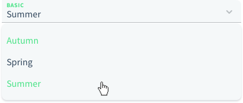 Selected item is green, so is the hover style of an element. There are no checks on the right for a single choice dropdowns.
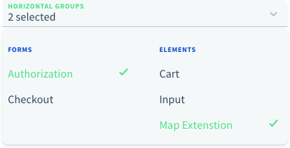 Selected items on a multiple choice dropdown have checks on the right. We might offer 2 types of displaying values: '# selected' or list picked items separated with commas.
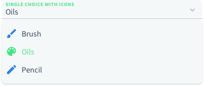 Select option might have an icon. By default it's blue, on mouse over and when selected they turn green.
Checkboxes, Radio Buttons
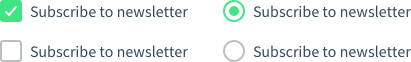 Checkboxes have rounded corners.
There are 2 options for inline selects: with and without a label.
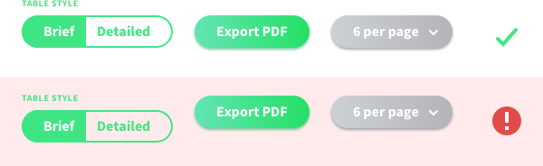 We should keep that in mind when building actions & settings blocks like the ones for tables.
Tabs
 Tabs are used to split large chunks of data/content into several simple screens. It works perfectly for forms. Tabs are centered with 40px margins between them. It's a bold text style with main black color for active and hover state, grey for inactive.
Tabs are used to split large chunks of data/content into several simple screens. It works perfectly for forms. Tabs are centered with 40px margins between them. It's a bold text style with main black color for active and hover state, grey for inactive.
Forms
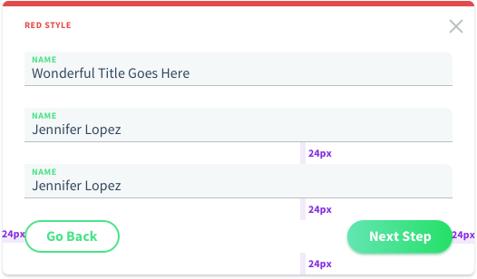 There are 3 main layouts for forms. The first on is the full width layout. Inputs take the entire space except for 24px margins on the sides.
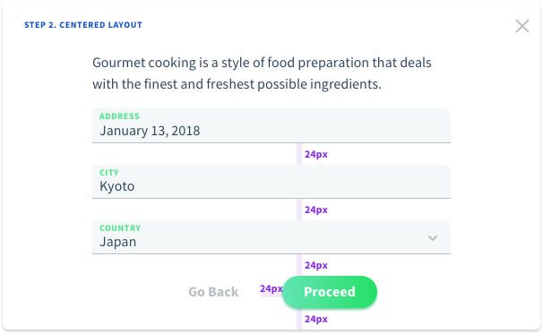 For fewer inputs and large modal/widgets, we can offer a centered layout. In this case we can setup a min-width around 400px and center the form horizontally.
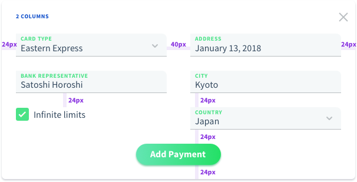 For larger amount of inputs we can offer a 2 columns form layout.
 Form groups is the other way to organize form elements.
Form groups is the other way to organize form elements.
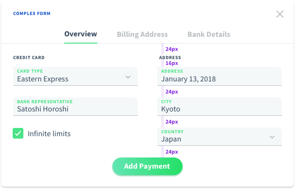 Complex form may combine several solutions.